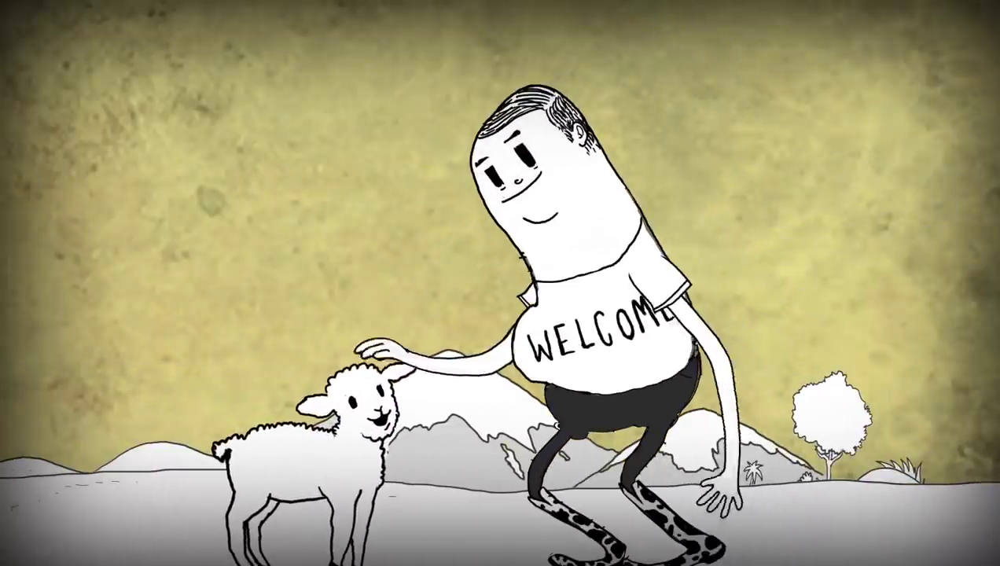

Ovelhas?
Nesta cena, Man faz carinho na ovelha e depois corta suas pernas e tira a lã da ovelha mãe que vem logo atrás.
Assim como as galinhas, as cabras e ovelhas são bichos super importantes para a sobrevivência no planeta Terra. Elas nos dão a carne, o couro, a lã, o leite e muitos outros produtos.
Muita gente, muitas famílias ao redor do mundo dependem desses animais. Sem eles, passariam fome, frio ou até morreriam.
Muitas vacas, bois, cavalos, ovelhas e cabras só existem no mundo hoje em dia porque o homem fez questão de proteger estes animais. Se não fosse o homem, esses bichos já estariam extintos. Ou seja, eles dependem do homem assim como o homem depende deles.